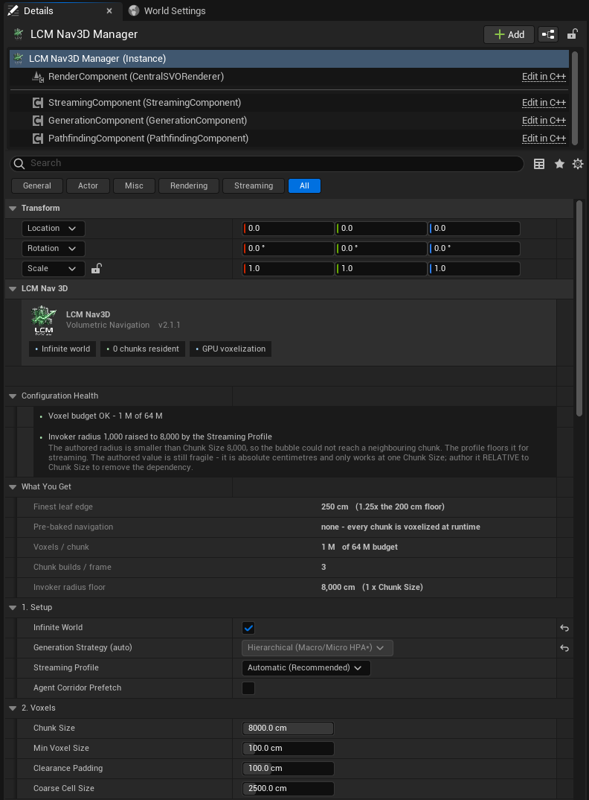
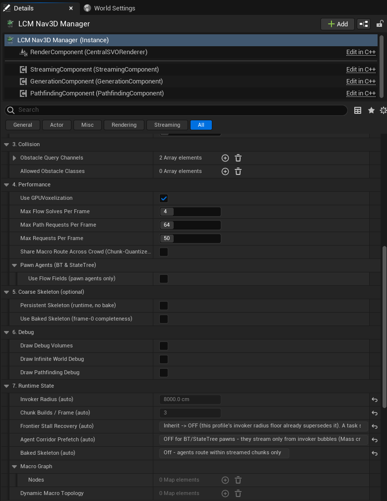

Settings Reference:
LcmNavigationManagerSVO
Every field on the navigation manager, in the order the Details panel presents them. Defaults and limits below are the shipping values.
If you only read one thing: the four settings that
decide whether the plugin works well in your level are
Infinite World,
World Extent / Chunk Size,
Min Voxel Size, and
Clearance Padding. Everything else is
refinement.
Concepts behind these are explained in Tutorial 02: Core Concepts.
The panel at a glance
The manager's Details panel is one LCM Nav3D group floated above the inherited Actor sections, then seven numbered sections in the order below.

Figure 1 - Sections 1-2, plus the three blocks above
them. Configuration Health and What You Get
are not settings; they are what the settings below resolve to.
They are worth reading before you change anything - the health block in
this shot is reporting a raised invoker radius, and the What You
Get block is reporting a 250 cm finest leaf from a 100 cm
Min Voxel Size, which is the single most misread number in
the plugin.

Figure 2 - Sections 3-7. Two things to notice:
- Section 7 is read-only. Every
(auto)row is a value the Streaming Profile derived, shown so the profile is auditable rather than magic.Frontier Stall Recovery (auto)is the only place a BehaviorTree task'sInheritcan be resolved for you, because a BT asset is not owned by a level and cannot know which manager it will run under. - Sections hide what does not apply. A finite world
shows no Coarse Skeleton options, and
Max Generations Per Framedisappears unless you are finite or on the Manual profile - the plugin does not show you a property it is going to ignore.
1. Setup
Infinite World: default
off
The biggest decision. Off = one fixed navigation volume built up front. On = the world is divided into chunks generated around agents as they move.
Leave it off unless you have a genuinely unbounded or streaming world. Finite is simpler, faster and more predictable.
Ticking this hides World Extent and reveals
Chunk Size and the skeleton options.
Auto Build On Play:
default on (finite only)
Builds the navigation volume at BeginPlay - voxelizing
the whole world, on every launch, on every player's machine. Turn it off
if you want to trigger BuildSVO yourself from Blueprint at
a specific moment, or if you have baked the SVO to an asset.
Turn it off when you bake. The Bake to
Asset button does this for you, and it is not a tidiness
measure: the streaming proxy and the manager both write the navigation
data during BeginPlay, and actor order is not guaranteed,
so with both enabled which one the level ends up using is undefined. The
Configuration Health section flags the combination.
Generation Strategy:
read-only (infinite only)
Shows which streaming strategy was selected automatically.
2. Voxels
World Extent:
default 10000 cm (finite only)
Half-width of the navigation volume, measured outward from
the world origin. The default gives a 200 m cube
spanning -10000 ... +10000 on each axis.
Range: 500-400000. Recommended UI range (slider): 2000-20000.
Anything outside this box has no navigation data. Paths to targets outside it fail. Size it to cover your play space.
How big can it actually be? It depends on
Min Voxel Size, not on a fixed distance. The real limit is a voxel count: the world is2 × World Extentwide and holds(2 × World Extent / Min Voxel Size)³voxels against a 64 M ceiling - which is 400³. So the largest legal half-extent is200 × Min Voxel Size:
Min Voxel SizeLargest World ExtentWorld size 50 cm 10 000 200 m cube 100 cm (default) 20 000 400 m cube 200 cm 40 000 800 m cube 500 cm 100 000 2 km cube The property clamp used to be a flat 20000, which is the row for the default
Min Voxel Sizeand wrong everywhere else - it blocked a perfectly legal 40 000 at 200 cm voxels, and allowed 8× over budget at 50 cm. A per-property clamp cannot express a rule that depends on another property, so the clamp is now just a sanity ceiling and Configuration Health reports the real budget live at whateverMin Voxel Sizeyou are using. Exceeding it does not fail - the generator silently coarsensMin Voxel Sizeto fit, so you get less precision than you configured.Trading voxel precision for area is a real choice, not a workaround: a 2 km flying-combat arena at 500 cm voxels is a sensible configuration. Just make it deliberately.
⚠ The volume does NOT follow the manager actor. The manager is a logical singleton with no root component, so its position is ignored - moving it does not move the navigation volume. Build your playable space around the world origin, or switch to an infinite world. The manager's Details panel reports the resolved bounds under What You Get so you can see them directly.
Chunk Size:
default 8000 cm (infinite only)
Edge length of one streaming chunk.
Range: 1000-800000. Recommended UI range (slider):
3000-8000. The clamp carries the same caveat as
World Extent above - it is a sanity ceiling, not the real
budget, which depends on Min Voxel Size and is reported
live in Configuration Health. Here the slider range is the
number that matters: it is the measured-reliable band, and
going outside it degrades long-range routing regardless of the
budget.
⚠ Do not treat this as a free dial. It affects memory, generation cost, and whether long routes can be found at all. 8000 is the tested default. If you change it, re-test long-range routing specifically: a value that looks fine for short hops can break distant paths.
⚠ Chunk Size changes navigation precision, and not in the direction you expect
This is the single most surprising thing about the setting, so it is worth stating plainly.
Subdivision stops when a child's half-extent falls below
Min Voxel Size, starting from Chunk Size / 2.
The finest leaf edge you actually get is therefore
Chunk Size / 2ᵏ - it lands somewhere between 2× and
4× Min Voxel Size, and it does
not improve as Chunk Size shrinks. Measured on a real
level at Min Voxel Size = 100:
| Chunk Size | finest leaf edge | Chunk Size | finest leaf edge | |
|---|---|---|---|---|
| 3000 | 375 cm (3.75×) | 7000 | 219 cm (2.19×) | |
| 5000 | 312 cm (3.12×) | 8000 | 250 cm (2.50×) | |
| 6000 | 234 cm | 9000 | 281 cm |
So a smaller Chunk Size can give you a coarser
octree. At Chunk Size 3000 you get 375 cm leaves from a 100
cm setting - and an opening that stays navigable at 250 cm can
voxelize shut at 375 cm. That is felt as "the agent refuses
to path", which reads like a bug rather than a setting.
What to do: leave it at 8000 unless you have a measured reason. If you must change it, use the Auto-Tuner (Editor Tools) - it measures the leaf edge from the built octree for each candidate rather than deriving it, and gates on whether a route exists at all before comparing quality or cost.
Min Voxel Size:
default 100 cm
The finest resolution the octree will subdivide to. The dominant quality/cost control.
Range: 10-2000. Recommended UI range: 25-500.
- Smaller → finds tighter gaps; more memory; longer builds.
- Larger → cheaper; narrow openings disappear.
Rule of thumb: about half the narrowest gap agents must pass through.
It's a floor, not an exact size. The octree halves down from the world/chunk size, so effective resolution snaps to powers of two. 100 → 90 may change nothing; 100 → 60 may double memory. Tune by testing.
Clearance Padding:
default 100 cm
Inflates obstacles during voxelization so agents keep clear of surfaces.
Range: 0-1000. Recommended UI range: 0-300.
⚠ Keep this well below
Min Voxel Size. Padding that approaches voxel size fills in doorways and corridors completely, and the pathfinder reports no route through openings you can clearly see. This is the single most common cause of "it says there's no path but I can see the gap".
Coarse Cell Size:
default 2500 cm
Cell size of the coarse long-range routing layer. Larger = cheaper long-range planning, less precise. The default suits most levels.
Range: 100-20000.
3. Collision
Obstacle Query Channels
Which collision channels count as obstacles. Anything on these
channels is voxelized as solid. Defaults to WorldStatic +
WorldDynamic.
Empty means nothing, not everything. Unlike
Allowed Obstacle Classesbelow, clearing this list does not widen the query - it voxelizes an empty world, and you get navigation data that says every point is open air. That passes every metric and shows up only as agents flying through walls. Bake to Asset refuses to run on an empty list for exactly this reason.
If a wall isn't blocking agents, check that its collision channel is in this list and that the mesh actually has collision enabled.
Allowed Obstacle Classes
Optional filter. Leave empty to consider all actors (normal). Populate it to restrict voxelization to specific actor classes (useful when you want to ignore scenery entirely).
4. Performance
Use GPU Voxelization:
default on
Builds the octree on the GPU, which is substantially faster. Falls back to CPU automatically if no suitable GPU is present. Turn it off only to force deterministic, reproducible builds.
Max Generations Per Frame:
default 1
Chunk builds allowed per frame. Higher fills the world faster but can cause hitches. Range: 1+, UI up to 8.
Max Path Requests Per Frame:
default 64
Path queries dequeued per frame. Raise for many agents replanning at once; lower to protect frame time. Range: 1-256.
Max Requests Per Frame:
default 50
General request throttle. Range: 1-200.
Max Flow Solves Per Frame:
default 4
Flow-field solves per frame. Range: 0-16.
Finite Obstacle Update Interval:
default 0.1 s (finite only)
How often dynamic obstacle changes are folded into the octree. Lower = more reactive, more CPU. Range: 0-2 s. See Tutorial 05.
Chunk Quantized Macro Cache:
default off
Caches long-range routes quantized to chunk boundaries. Helps when many agents share similar long-range routes (large crowds spawning together).
Pawn Agents (BT & StateTree) subcategory
| Field | Default | Meaning |
|---|---|---|
Use Flow Fields (pawn agents only) |
off | Opt-in: pawn agents heading to a shared goal use one steering field instead of individual paths |
Flow Field Threshold |
16 |
Agent count at which a shared field is built (range 2-512) |
Flow Field Cluster Cell Size |
1000 cm |
Grouping granularity for shared goals (range 100-10000) |
Flow fields are for swarms heading to the same place. For a handful of agents with individual goals they are pure overhead, so leave it off.
5. Coarse Skeleton (optional)
Two independent, composable ways to keep long-range macro routing complete in a streamed world. Both are opt-in and default off. They are not part of the base configuration - turn one on only when an agent must route to somewhere it cannot currently see. Agents operating inside their streaming bubble need neither.
Persistent Skeleton (runtime, no bake):
default off (infinite only)
Keeps a lightweight long-range connectivity graph in memory so distant routes can be planned before the detailed chunks exist. No bake required; works on any world, including procedural ones.
Turn it on when an agent returns across ground it has already
covered and must not lose routability over it. The cost is
memory that grows with how much ground has been covered - one compact
node per visited-then-evicted chunk, bounded by
r.LcmNav.MaxSkeletonNodes, not by the size of the resident
set.
Use Baked Skeleton (frame-0 completeness):
default off (infinite only)
Loads a pre-baked skeleton so long-range routing is complete from the very first frame, including into never-visited space.
Tick this on first. The Bake
Skeleton button only appears in the banner once it is on -
nothing else reads a bake, so the button stays hidden until you have
asked for one. Then click it Rebake after changing the level or the
voxel settings - a stale bake is refused at load, and the
Baked Skeleton (auto) line under 7. Runtime
State will say so.
Baked Skeleton (auto) under 7. Runtime
State always reports which of the two, if either, is actually
active.
6. Debug
Draw Debug Volumes:
default off
Draws the octree. The most useful diagnostic in the plugin: if a gap shows no fine voxels, the pathfinder can't route through it either. Expensive; turn it off when you're done.
Also available from Blueprint via SetDrawDebugVolumes /
ToggleDrawDebugVolumes.
Draw Pathfinding Debug:
default off
Draws computed paths.
Draw Infinite World Debug:
default off (infinite only)
Draws chunk boundaries and streaming state.
Debug Redraw Coalesce Seconds:
default 0.25 s
How long debug redraws are batched. Raise it if debug drawing itself is hurting frame rate.
Force Redraw SVOwas removed. It was a checkbox that instantly unchecked itself, and it was destructive: on a level with no baked data it deleted the editor preview it was meant to refresh. Reloading a bake into the preview now happens automatically when you bake, and the manual action is the Refresh Preview button, which appears on the manager only when the level actually has baked navigation to reload.
7. Runtime State
Read-only diagnostics showing live counts of resident chunks, skeleton state and staleness. Useful when tuning an infinite world; nothing to set.
Build & Tools (Blueprint-callable)
| Function | Purpose |
|---|---|
BuildSVO |
Build the navigation volume now |
BuildSVOInEditor |
Build in-editor into memory, so EQS previews work without playing. Not saved |
BakeFiniteSVOToAsset |
(finite) Save the SVO to an asset + streaming proxy, so the
level stops voxelizing at launch. Turns Auto Build On Play
off. Returns false and does nothing if a single-volume
Bake Volume already owns this level's one finite volume |
BakeSkeletonInEditor |
(infinite) Pre-bake the long-range skeleton for
Use Baked Skeleton |
LoadBakedSkeleton |
Load a previously baked skeleton |
FindPath |
Synchronous path query: start, end, options, out array of points |
FindCover |
Tactical cover query |
UpdateDynamicObstacle |
Manually stamp an obstacle by bounds |
SetMacroTopologyCell |
Manually mark a coarse cell blocked/free |
ForceRedrawSVO, SetDrawDebugVolumes,
ToggleDrawDebugVolumes,
DebugDrawFlowField |
Debug |
Per-agent settings
These live on the Fly To BT task / Fly To StateTree task, not the manager. Both tasks expose the identical surface, in six numbered sections:
1. Goal
| Field | Default | Meaning |
|---|---|---|
Acceptance Radius |
100 cm |
Distance at which the goal counts as reached |
Target Location |
- | (StateTree only) world-space goal |
Target Actor |
none | (StateTree only) moving goal; overrides Target Location when chase is on |
2. Movement
| Field | Default | Shown when | Meaning |
|---|---|---|---|
Use Flight Movement Component |
off | always | Delegate the body to a ULcmFlightMovementComponent for
6-DOF drone / bird / fish dynamics |
Flight Speed |
600 cm/s |
not delegating | Cruise speed |
Max Acceleration |
2000 cm/s² |
not delegating | Lower = heavier feel; also sets how hard the agent can brake into its arrival |
Flight Style |
Physics (Drones/Ships) | not delegating | vs Linear (Biological/Magic) |
Deceleration Distance |
800 cm |
not delegating and Physics-weighted | Slow-down lead-in. LinearDirect has no inertia to bleed off, and the
flight component brakes on v = sqrt(2·a·d) against the real
goal distance instead |
Banking Amount |
4.0 |
not delegating | Roll into turns (cosmetic) |
Max Banking Angle |
45° |
not delegating | Roll limit (cosmetic) |
Whoever owns the body owns its caps. Tick
Use Flight Movement Componentand this section collapses to that one checkbox: speed, acceleration, flight style and banking are set on the component's Flight Config instead, and the task reads them from there for its guidance, braking and chase-lead maths. Untick it and the task's own values apply. Exactly one place is ever live.
3. Pathfinding
| Field | Default | Meaning |
|---|---|---|
Query Options |
- | Solver, heuristic, smoothing, agent size, wall-distance preference |
4. Avoidance (the reactive knobs hide when Avoidance Style is CBS)
| Field | Default | Meaning |
|---|---|---|
Avoidance Style |
Reactive (Boids/Push) | None / Reactive / Predictive (ORCA) / Context-Based |
Avoidance Time Horizon |
2.0 s |
ORCA look-ahead (Predictive only) |
Collision Margin |
1.2 |
Safety multiplier on the avoidance radius |
Wall Check Distance |
200 cm |
Wall probe range |
Wall Push Force |
4000 |
Wall push strength - keep it strong |
Path Centering Force |
600 |
0 = free drift, high = train-on-tracks |
Separation Radius |
150 cm |
Neighbour spacing |
Separation Weight |
2.0 |
Spacing strength |
5. Moving Goal (Chase)
| Field | Default | Meaning |
|---|---|---|
Enable Goal Prediction |
off | Intercept a moving target |
Force Enable Chase |
off | Activate chase without also setting
r.LcmNav.Chase.Enable |
Lead Seconds Cap |
2.0 s |
Prediction limit |
Drift Replan Cm |
400 cm |
Target movement before replanning |
6. Streaming (infinite worlds only)
| Field | Default | Meaning |
|---|---|---|
Frontier Stall Recovery |
Inherit | Coast / climb out / arrive un-quantized when stalled at a streaming frontier. Inherit defers to the manager's Streaming Profile |
Frontier Stall Recoveryis the locomotion half only. Pinning chunks ahead of the agent is a separate world-level setting -Agent Corridor Prefetchon the LCM Nav3D Manager. They used to be one checkbox named for the half it mostly wasn't.
Solver and smoothing choices are described in Tutorial 02 §6.
Recommended starting points
| Scenario | Infinite |
Extent / Chunk | Min Voxel Size |
Clearance Padding |
|---|---|---|---|---|
| Arena or single building | off | 10000 |
100 |
100 |
| Tight interiors, small agents | off | 10000 |
50 |
25 |
| Large outdoor level | off | 20000 |
200 |
100 |
| Open / streaming world | on | 8000 |
100 |
100 |
Start here, then confirm with Draw Debug Volumes that
the gaps you care about actually have voxels in them.